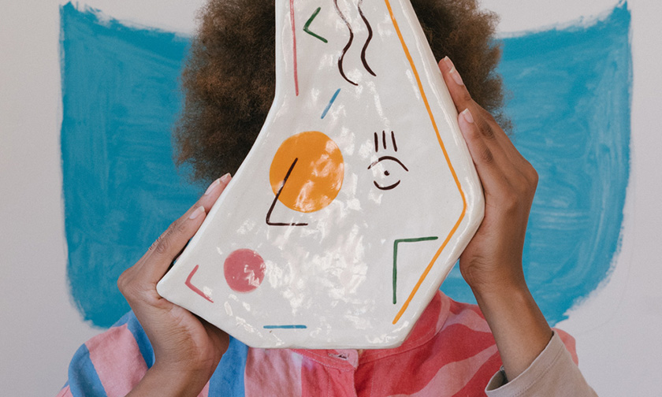
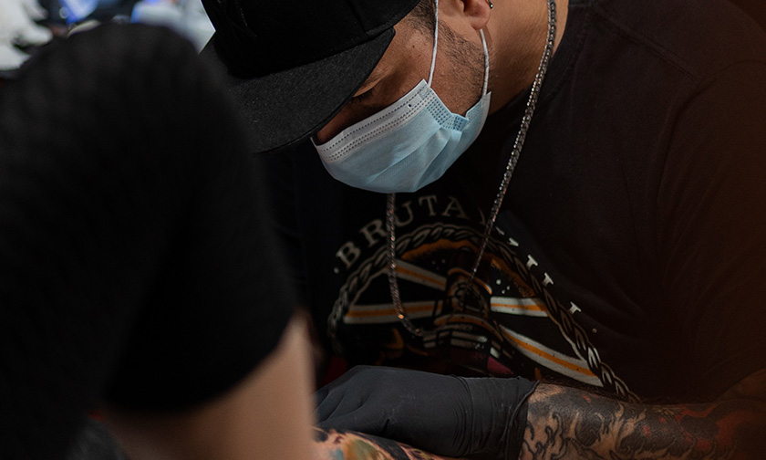
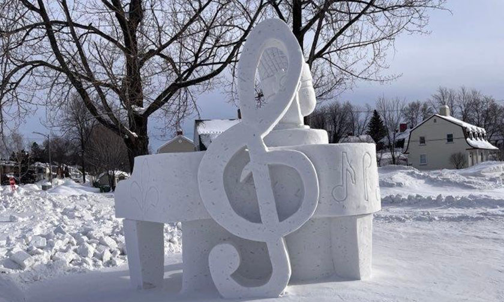
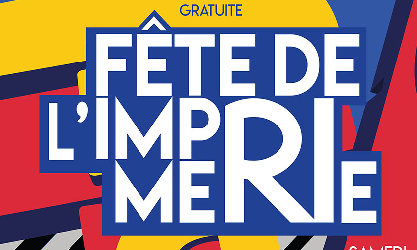

Le jeune Isaiah nous fait découvrir ces multiples talents
3 Nov. 2018 | 2018, Lycée François de Mahy, saint-pierre,
Réunion |
À L’âge de 3 ans le jeune Isaïah démontre déjà de multiples talents pour le dessin. Au mois d’octobre prochain, il exposera lors d’un vernissage des fresques qu’il a realisé en s’inspirant des graffitis qu’il voyait dans la rue.

Isaïah est atteint d’un spectre autistic, celui du syndrome d’Asperger. Pourtant cela ne l’a pas empêcher d’intégrer la célèbre ecole pour surdoués « Fernand-Seguin ». Les professeurs ne s’attendaient pas aussi tôt a recevoir un prodige comme lui. Après avoir passe les tests d’aptitudes, l’accès à l’établissement lui a été autorisé. Non seulement son talent pour le dessin est inné mais il excelle aussi dans les mathématiques. Il bénéficie cependant d’un accompagnement personnalisé, étant donné son âge.
Désormais, le petit artiste possède tous les outils et l’accompagnement nécessaire à son épanouissement. Ses parents sont particulièrement fiers et surpris des capacités de leur fils. Ils ne cachent pas leur inquiétude au vue de la cadence où le petit se développe. Ce qui leur importe c’est que celui-ci s’épanouisse pleinement.
Le 25 octobre 2022 s’ouvrira donc l’exposition « AGA » au musée de l’ABORESCENCE. L’exposition durera quelques semaines, certaines stars comme Sheldon Cooper viendront animer l’événement. Isaïah sera aussi au rendez-vous. Nous invitons les tout petits comme les grands à venir découvrir ce petit artiste hors du commun !
Le tatouage traditionnelle sur l'île de la Réunion
7 Jui. 2020 | 2020, île de la Réunion, saint-pierre |
Le tatoueur « Crokdur » est bien connu dans le monde du tatouage traditionnelle. Lors du salon du tatouage donné à st-Denis, celui-ci donnera l’occasion aux accros du tattoo de recevoir des flash.

Le salon compte environ 600 000 visiteurs chaque année. Des tatouages modernes aux traditionnelles, il y en a pour tous les goûts. L’occasion aux amoureux dugenre de trouver l’emblême ou l’artiste qui leur conviendra le mieux. Le salon aura la particularité d’afficher des personnages haut en couleur originaires de la Réunion. Mais aussi des artistes venu d’Afrique du Sud ou de Polynésie.
Crokdur se représentera pour le concours de l’artiste le plus original, avec à la clé du concours : un chèque de 10 000 euros et un billet pour le salon mondial du tatouage. L’artiste aura si il le souhaite l’occasion de se faire connaître parmi d’autres artistes bien connu de la scène internationale du domaine.
En ce qui concerne Crokdur, il souhaite faire des tatouages inspirés des repas typiques de l’île . Le pain bouchon, emblématique sandwich apprécié des locaux, fait parti des demandes récurrentes que l’atiste recoit. Même si pour lui le samoussa est de loin , le plus beau tatouage qu’il ait eu à faire.
Les mystérieuses scultures de neige du Saguenay
12 Jav. 2021 | Saguenay-lac-saint-jean, Jonquière |
Depuis quelques jours observe des bonhomme de neige un peu partout dans Jonquière. Les rumeurs disent qu’un mystérieux sculpteur profiterait des tempêtes de neige pour fabriquer ses hommes de glace. Bien sûr, rien de dangereux dans cet art de rue, mais un habitant a accusé l’artiste « Verglas » d’avoir bloqué la sortie de son garage avec un immense glaçon sculpté de la porte.

La police n’a pour l’instant pas émit d’avis sur le sujet . Le maire a cependant déclaré que rien n’empêchait la création des bonhommes de neige, du moment que la tranquillité des citoyens n’était pas perturbée. Aussi, une récompense sera aura offerte pour découvrir qui se cache derrière l’identité du mystérieux créateur.
Il existe déjà de nombreuses créations symboliques dans Jonquière. Notamment la fameuse « Poutine-eater » représentant un petit Olaf de la reine des neiges degustant un poutine. Il y a aussi le joueur de hockey géant et le castor père noël. Certaines œuvres ont déjà été illuminées par des guirlandes électriques ou des spots de lumières. De quoi créer l’émerveillement chez les tous petits qui espèrent pouvoir admirer une statut du père noël dans son traîneau.
Personne n’a encore revendiqué les sculptures. Et en ce qui concerne l’artiste verglas, la seule preuve de son existence jusqu’à aujourd’hui est une écriture sur glace près d’une piste de patinoire. Un petit texte ironique juste avant l’entrée où il est écrit : « Attention sol glissant même avec des patins… »
Le Pixel-Art revient à la mode sur les réseaux
20 Avr. 2017 | Sur le Web |
Pack-Mack est le tout nouveau logiciel uniquement créé pour les lovers du pixel-art. Les puristes hésiteront peut-être au départ a quitter photoshop, mais il existe des fonctionnalités qui feront sans doute craquer les plus irréductibles. Par exemple la fonction « spray » a été travaillée pour colorer les plus petits détails dans n’importe quel dessin.
La fonction reste pour le moment en développement alpha mais elle a déjà conquit l’internet avec de nombreux donateurs. Bigmac, le développeur à l’origine de ce projet, a déjà annoncé que les utilisateurs auraient par la suite l’occasion de créer de véritables bac à sable et qui sait peut-être même plus pour développer la communauté d’artiste autour du pixel art.
Avec l’essor des NFT, le projet prend de plus en plus d’ampleur. Des stars tel que Kanye West souhaite investir et développer d’autres projets. Bigmac a lui aussi confirmer d’autres partenariats, tout en faisant comprendre qu’il souhaitait maintenir le contrôle sur son bébé.
Il n’est pas prêt de cèder sa création qui vient tout juste de faire son entrée dans le domaine. Il reste satisfait de l’ampleur et de l’enthousiasme que suscite le projet.
Une galerie virtuelle a été concue spécialement pour la phase bêta du projet. Et un futur tournoi de pixel-war est également prévu avec de grands youtubeurs tel que Kameto, Ibai, Pokimane. De quoi développer le projet mais aussi de réaliser des experimentations avec les tous nouveaux outils conçus pour certaisns thèmes.
UN JEUNE REMPORTE UN CONCOURS D'AFFICHE ORGANISÉ À NANTES AUX HEXAGONES
3 Nov. 2018 | 2018, Lycée François de Mahy, saint-pierre,
Réunion |
Un élève en terminal au lycée François de Mahy dans la ville de saint-pierre à la Réunion, remporte le prix "Trophée du Jeunes caractère". Le concours c'était déroulé dans la ville de Nantes, au musée de l'Imprimerie

Un concours d’affiche organisé à Nantes en France destiné aux élèves de communication visuelle et pluri-média. C’est un concours qui se fait toutes les années au musée de l’Imprimerie de Nantes et cette année c’est un Réunionnais qui se place 3e du podium grâce à son affiche. Une affiche qui représente bien la réunion avec ces choix de couleur chaude.
Il a reçu les félicitations des professeurs et du directeur pour avoir obtenu le trophée, la filière communication visuelle de Lycée François de Mahy à pu être mis en avant face aux autres écoles de France de la même filiaire. Grâce à cela les écoles sont en relation entre elle permettant de faire des projets en correspondance.
Le Lycée Françoise de Mahy est une école passionnante située au cœur de l'île de la Réunion, à Saint-Pierre. C'est une école unique, avec un corps étudiant diversifié et un engagement à fournir une éducation de qualité. Le programme de l'école est conçu pour fournir aux élèves les connaissances et les compétences dont ils ont besoin pour réussir dans un monde qui change rapidement.